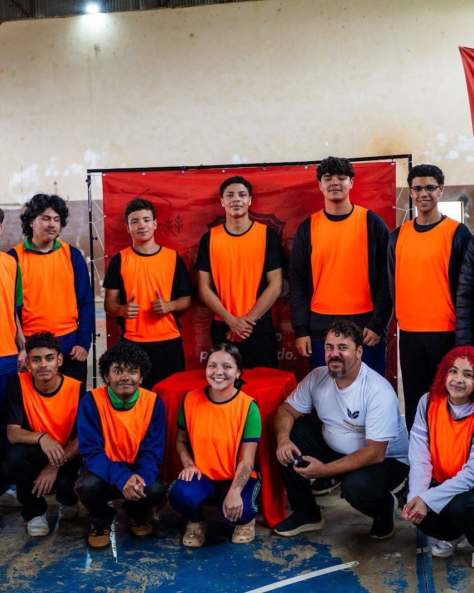
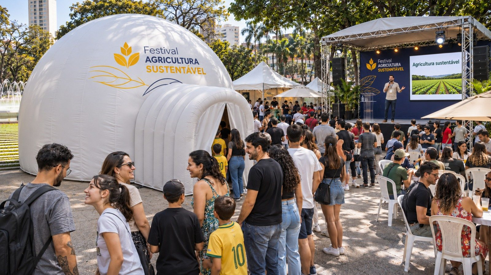
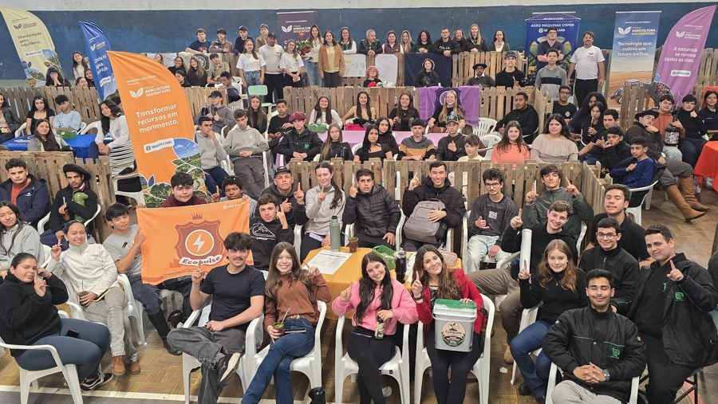
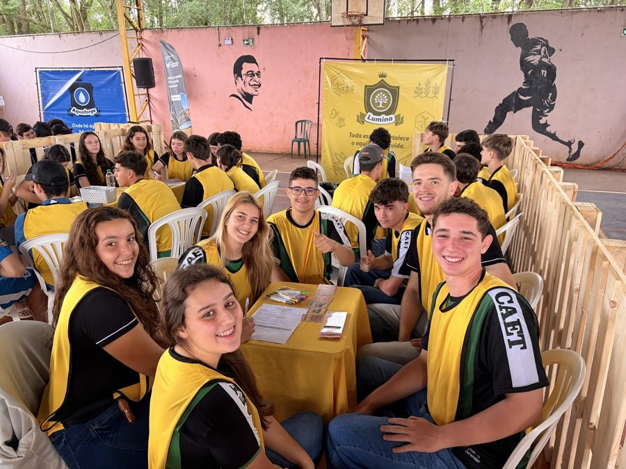
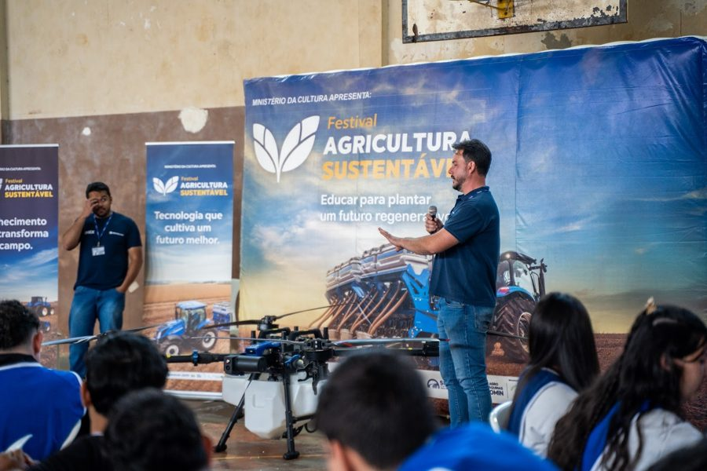

Exposição imersiva
Uma projeção dentro do domo sobre como a agricultura faz parte do nosso dia a dia.
O encerramento do projeto reúne atrações artísticas, tendas de parceiros, trabalhos de estudantes e uma exposição imersiva sobre a presença da agricultura no nosso dia a dia.


Acolhimento do público, chegada dos parceiros e música ambiente.
Com Palhaça Chorona e Waleska Saddock.
Música na praça.
Histórias para todas as idades.
Bloco na praça para animar a tarde.
Políticas públicas, educação e tecnologia a serviço de práticas agrícolas mais sustentáveis. Quem participa
A exposição imersiva e as tendas ficam abertas durante todo o festival.
Uma projeção dentro do domo sobre como a agricultura faz parte do nosso dia a dia.
Hortas inteligentes e tecnologia para o cultivo em pequenos espaços.
Site oficialMeliponicultura, abelhas sem ferrão e os produtos da atividade.
Site oficialO colégio agrícola de Castro (PR) apresenta projetos estudantis: monitoramento de colmeias, criação de peixes, tratamento da água com plantas, compostagem e cultivo de champignon.
Exposição dos trabalhos sobre agricultura sustentável desenvolvidos durante a semana nas escolas de Curitiba.
Ativação e acolhimento, com distribuição de água, pipoca e pintura facial.
Participação na programação das tendas.
Site oficialUma conversa sobre como políticas públicas, educação e tecnologia podem contribuir para práticas agrícolas e sistemas alimentares mais sustentáveis.
O Festival Agricultura Sustentável levou a escolas do Rio Grande do Sul e do Paraná uma semana de oficinas práticas sobre o campo, a tecnologia e a sustentabilidade.
Em cada escola, estudantes do ensino médio trabalharam em equipe, conheceram de perto a tecnologia do campo e, no fim da semana, apresentaram suas ideias num hackathon. A festa na Praça da Espanha encerra o projeto e abre para toda a cidade o que foi vivido nas escolas.

21 a 25 de setembro · Escola Estadual de Educação Profissional de Dom Pedrito

28 de setembro a 2 de outubro · Colégio Agrícola Estadual de Toledo

5 a 9 de outubro · Colégio Dom Pedro I
9 a 13 de novembro · Colégio Estadual Leôncio Correia. No sábado, o festival na praça.